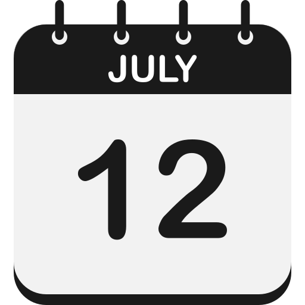
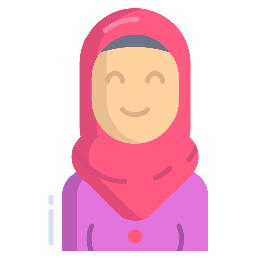
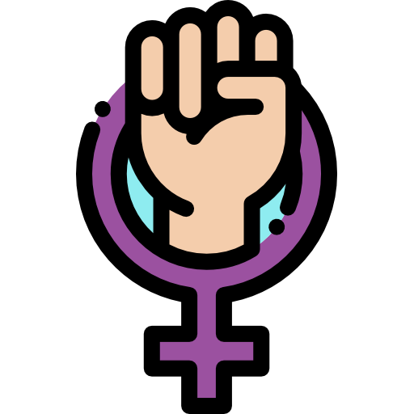

Curiosidades |
|
 Documentário Documentário |
 12 de julho |
| Em 2015, foi lançado o documentário "He Named Me Malala", dirigido por Davis Guggenheim. O filme narra a vida de Malala, sua família e sua luta pela educação. O documentário "He Named Me Malala" foi pré-selecionado para o Oscar de Melhor Documentário em 2015, mostrando o impacto global de sua história. |
Em 2014, o Secretário-Geral da ONU, Ban Ki-moon, declarou o dia 12 de julho, aniversário de Malala, como "Malala Day" em honra à sua luta e ao seu ativismo em prol da educação. |
|  Origem do nome |
 Blog Blog |
| Malala foi nomeada em homenagem a Malalai de Maiwand, uma heroína pashtun do século XIX que inspirou os soldados afegãos na batalha contra os britânicos. O nome "Malala" significa "tristeza" em pashto. |
Antes de se tornar mundialmente famosa, Malala começou a escrever um blog sob um pseudônimo para a BBC Urdu. Nele, descrevia as dificuldades de viver sob o regime do Talibã e as restrições impostas às meninas que queriam estudar. |
 Línguas e esporte Línguas e esporte |
 Atuação global |
| Além de sua língua nativa, o pashto, Malala fala urdu e inglês fluentemente. Sua habilidade com idiomas a ajudou a se comunicar e a se conectar com uma audiência global. Malala é uma grande fã de críquete, um esporte extremamente popular no Paquistão. |
Malala é uma líder e inspiração global, demonstrando coragem e dedicação à educação. Sua trajetória, desde o vale do Swat até ser uma das mais jovens ganhadoras do Nobel da Paz, é um testemunho de superação e um chamado à ação para justiça e igualdade. Seu legado prova que com determinação, é possível fazer uma diferença significativa. |